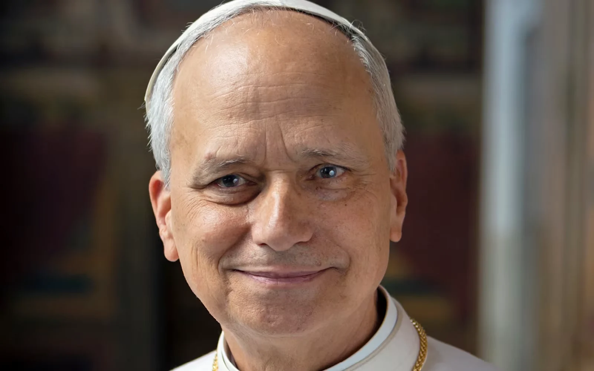

Bienvenida
8 de noviembre

EL TRIBUNO · COBERTURA ESPECIAL
Los mensajes del Papa, la agenda de su visita y las historias de fe que conectan a Salta con el país.
Seguí la coberturaLeón XIV ya llegó a la Argentina
LA COBERTURA, AL INSTANTE
Las últimas cinco publicaciones de El Tribuno, ordenadas por fecha y hora.
Cargando las últimas publicaciones…
EL RECORRIDO
Cuatro días de visita. Consultá las actividades en la cobertura.
8 de noviembre
9 de noviembre
10 de noviembre
11 de noviembre
NUESTRA MIRADA · SALTA Y EL PAPA
El Señor y la Virgen del Milagro, las historias de los fieles y el recuerdo de la visita de Juan Pablo II a Salta. Una cobertura con identidad propia.
Explorá las historias de Salta ↗EL PONTÍFICE
Conocé su trayectoria, sus mensajes y el significado de su visita a la Argentina a través de la cobertura periodística de El Tribuno.
Leé las notas de contexto ↗COBERTURA MULTIMEDIA
Fotos, videos y testimonios de los momentos más destacados.
Espacios preparados para incorporar fotografías y videos autorizados.
TODAS LAS NOVEDADES
Todas las noticias de El Tribuno sobre la visita del papa León XIV a la Argentina, en un solo lugar.